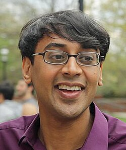

Manjul Bhargava | |
|---|---|
 Manjul Bhargava in 2014 | |
| Born | 8 August 1974 Hamilton, Ontario, Canada |
| Education | Harvard University (AB) Princeton University (PhD) |
| Known for | Bhargava factorial Bhargava cube 15 and 290 theorems average rank of elliptic curves |
| Awards | Fellow of the Royal Society (2019) Padma Bhushan (2015) Fields Medal (2014) Infosys Prize (2012) Fermat Prize (2011) Cole Prize (2008) Clay Research Award (2005) SASTRA Ramanujan Prize (2005) Blumenthal Award (2005) Merten M. Hasse Prize (2003) Morgan Prize (1996) Hoopes Prize (1996) Hertz Fellowship (1996) |
| Scientific career | |
| Institutions | Princeton University Leiden University University of Hyderabad |
| Thesis | Higher composition laws (2001) |
| Andrew Wiles[1] | |
Doctoral students | |
| Website | www |
{kind=link}
Manjul Bhargava FRS (born 8 August 1974)[2] is a Canadian-American mathematician. He is the Robert Gunning-Brandon Fradd, Class of 1983, Professor of Mathematics at Princeton University, the Stieltjes Professor of Number Theory[3] at Leiden University, and also holds Adjunct Professorships at the Tata Institute of Fundamental Research, the Indian Institute of Technology Bombay, and the University of Hyderabad. He is known primarily for his contributions to number theory.
Bhargava was awarded the Fields Medal in 2014. According to the International Mathematical Union citation, he was awarded the prize "for developing powerful new methods in the geometry of numbers, which he applied to count rings of small rank and to bound the average rank of elliptic curves".[4][5][6] He was also a member of the Padma Award committee in 2023.[7]
In February 2026, he became the first president of the National Museum of Mathematics (MoMath) in New York city.[8]
Education and career
Bhargava was born to an Indian family in Hamilton, Ontario, Canada, but grew up and attended school primarily on Long Island, New York. His mother Mira Bhargava, a mathematician at Hofstra University, was his first mathematics teacher.[9][10] He completed all of his high school math and computer science courses by age 14.[11] He attended Plainedge High School in North Massapequa, and graduated in 1992 as the class valedictorian. He obtained his AB from Harvard University in 1996, where he was elected to Phi Beta Kappa. For his research as an undergraduate, he was awarded the 1996 Morgan Prize. The research was eventually published in The American Mathematical Monthly in 2000, and established the Bhargava factorial.[12] Bhargava went on to pursue graduate studies at Princeton University, where he completed a doctoral dissertation titled "Higher composition laws" under the supervision of Andrew Wiles and received his PhD in 2001, with the support of a Hertz Fellowship.[13] He was a visiting scholar at the Institute for Advanced Study in 2001–02,[14] and at Harvard University in 2002–03. Princeton appointed him as a tenured Full Professor in 2003. He was appointed to the Stieltjes Chair in Leiden University in 2010.
Bhargava has also studied the tabla under gurus such as Zakir Hussain.[15] He also studied Sanskrit from his grandfather Purushottam Lal Bhargava, a scholar of Sanskrit and ancient Indian history.[16][17] He is an admirer of Sanskrit poetry.[18]
Career and research
Bhargava’s PhD thesis generalized Gauss's classical law for composition of binary quadratic forms to many other situations. One major use of his results is the parametrization of quartic and quintic orders in number fields, thus allowing the study of the asymptotic behavior of the arithmetic properties of these orders and fields.
His research also includes fundamental contributions to the representation theory of quadratic forms, to interpolation problems and p-adic analysis, to the study of ideal class groups of algebraic number fields, and to the arithmetic theory of elliptic curves.[19] A short list of his specific mathematical contributions are:
- Fourteen new Gauss-style composition laws.
- Determination of the asymptotic density of discriminants of quartic and quintic number fields.
- Proofs of the first-known cases of the Cohen-Lenstra-Martinet heuristics for class groups.
- Proof of the 15 theorem, including an extension of the theorem to other number sets such as the odd numbers and the prime numbers.
- Proof (with Jonathan Hanke) of the 290 theorem.
- A novel generalization of the factorial function, Bhargava factorial,[20] providing an answer to a decades-old question of George Pólya.[21]
- Proof (with Arul Shankar) that the average rank of all elliptic curves over Q (when ordered by height) is bounded.
- Proof that most hyperelliptic curves over Q have no rational points.
In 2015, Manjul Bhargava and Arul Shankar proved the Birch and Swinnerton-Dyer conjecture for a positive proportion of elliptic curves.[22]
Awards and honours

Bhargava has won several awards for his research, the most prestigious being the Fields Medal, the highest award in the field of mathematics, which he won in 2014.
He received the Morgan Prize in 1996.[23] and Hertz Fellowship[24] He was named one of Popular Science magazine's "Brilliant 10" in November 2002. He then received a Clay 5-year Research Fellowship and the Merten M. Hasse Prize from the MAA in 2003,[25] the Clay Research Award, the SASTRA Ramanujan Prize, and the Leonard M. and Eleanor B. Blumenthal Award for the Advancement of Research in Pure Mathematics in 2005.
Peter Sarnak of Princeton University has said of Bhargava:[26]
At mathematics he's at the very top end. For a guy so young I can't remember anybody so decorated at his age. He certainly started out with a bang and has not let it get to his head, which is unusual. Of course he couldn't do what he does if he wasn't brilliant. It's his exceptional talent that's so striking.
In 2008, Bhargava was awarded the American Mathematical Society's Cole Prize.[27] The citation reads:
Bhargava's original and surprising contribution is the discovery of laws of composition on forms of higher degree. His techniques and insights into this question are dazzling; even in the case considered by Gauss, they lead to a new and clearer presentation of that theory.
In 2009, he was awarded the Face of the Future award at the India Abroad Person of the Year ceremony in New York City.[28] In 2014, the same publication gave the India Abroad Publisher's Prize for Special Excellence.[29]
In 2011, he was awarded the Fermat Prize for "various generalizations of the Davenport-Heilbronn estimates and for his startling recent results (with Arul Shankar) on the average rank of elliptic curves".[30] In 2012, Bhargava was named an inaugural recipient of the Simons Investigator Award,[31] and became a fellow of the American Mathematical Society in its inaugural class of fellows.[32] He was awarded the 2012 Infosys Prize in mathematics for his "extraordinarily original work in algebraic number theory, which has revolutionized the way in which number fields and elliptic curves are counted".[33]
In 2013, he was elected to the National Academy of Sciences.[34]
In 2014, Bhargava was awarded the Fields Medal at the International Congress of Mathematicians in Seoul[17] for "developing powerful new methods in the geometry of numbers, which he applied to count rings of small rank and to bound the average rank of elliptic curves".[35]
In 2015, he was awarded the Padma Bhushan, the third-highest civilian award of India.[36]
In 2017, Bhargava was elected as a member of the American Academy of Arts and Sciences.[37] In 2018, Bhargava was named as the inaugural occupant of The Distinguished Chair for the Public Dissemination of Mathematics at The National Museum of Mathematics (MoMath). This is the first visiting professorship in the United States dedicated exclusively to raising public awareness of mathematics.[38] Bhargava was conferred a Fellowship at the Royal Society in 2019.[39]
Selected publications
- Bhargava, Manjul (2000). "The Factorial Function and Generalizations" (PDF). The American Mathematical Monthly. 107 (9): 783–799. CiteSeerX 10.1.1.585.2265. doi:10.2307/2695734. JSTOR 2695734. Archived from the original (PDF) on 3 March 2016.
- Bhargava, Manjul (2004). "Higher Composition Laws I: A New View on Gauss Composition, and Quadratic Generalizations" (PDF). Annals of Mathematics. 159: 217–250. doi:10.4007/annals.2004.159.217.
- Bhargava, Manjul (2004). "Higher Composition Laws II: On Cubic Analogues of Gauss Composition" (PDF). Annals of Mathematics. 159 (2): 865–886. doi:10.4007/annals.2004.159.865.
- Bhargava, Manjul (2004). "Higher Composition Laws III: The Parametrization of Quartic Rings" (PDF). Annals of Mathematics. 159 (3): 1329–1360. doi:10.4007/annals.2004.159.1329.
- Bhargava, Manjul (2005). "The density of discriminants of quartic rings and fields" (PDF). Annals of Mathematics. 162 (2): 1031–1063. doi:10.4007/annals.2005.162.1031. S2CID 53482033.
- Bhargava, Manjul (2008). "Higher composition laws IV: The parametrization of quintic rings" (PDF). Annals of Mathematics. 167: 53–94. doi:10.4007/annals.2008.167.53.
- Bhargava, Manjul (2010). "The density of discriminants of quintic rings and fields" (PDF). Annals of Mathematics. 172 (3): 1559–1591. arXiv:1005.5578. Bibcode:2010arXiv1005.5578B. doi:10.4007/annals.2010.172.1559.
- Bhargava, Manjul; Satriano, Matthew (2014). "On a notion of "Galois closure" for extensions of rings". Journal of the European Mathematical Society. 16 (9): 1881–1913. arXiv:1006.2562. doi:10.4171/JEMS/478. MR 3273311. S2CID 18493502.
- Bhargava, Manjul; Shankar, Arul (2015). "Binary quartic forms having bounded invariants, and the boundedness of the average rank of elliptic curves". Annals of Mathematics. 181 (1): 191–242. arXiv:1006.1002. doi:10.4007/annals.2015.181.1.3. MR 3272925. S2CID 111383310.
- Bhargava, Manjul; Shankar, Arul (2015). "Ternary cubic forms having bounded invariants, and the existence of a positive proportion of elliptic curves having rank 0". Annals of Mathematics. 181 (2): 587–621. arXiv:1007.0052. doi:10.4007/annals.2015.181.2.4. S2CID 1456959.
See also
References
- ^ Manjul Bhargava at the Mathematics Genealogy Project
- ^ Gallian, Joseph A. (2009). Contemporary Abstract Algebra. Belmont, CA: Cengage Learning. p. 571. ISBN 978-0-547-16509-7.
- ^ "Fields Medal for Leiden Professor of Number Theory Manjul Bhargava" (Press release). 13 August 2014. Retrieved 13 August 2014.
- ^ "Fields Medal 2014" (Press release). International Mathematical Union. Retrieved 10 February 2021.
- ^ "Press Release - Manjul Bhargava" (PDF). International Mathematical Unioin. 10 February 2021.
- ^ "Fields Medallists 2014 awardees with brief citations | International Mathematical Union (IMU)". www.mathunion.org. Retrieved 9 February 2021.
- ^ "Padma Awards Committee" (PDF). Ministry of Home Affairs. April 2023. Retrieved 21 August 2024.
- ^ "National Museum of Mathematics Names Fields Medalist Dr. Manjul Bhargava as First President". 12 March 2026. Retrieved 12 March 2026.
- ^ "At Play in the Fields of Math". 21 January 2016. Retrieved 29 September 2016.
- ^ "Fareed Zakaria is India Abroad Person of the Year — Rediff.com India News". News.rediff.com. 21 March 2009. Retrieved 14 August 2014.
- ^ "India Abroad — Archives 2003-2008". Indiaabroad-digital.com. 30 December 2009. Retrieved 14 August 2014.
- ^ Bhargava, Manjul (2000). "The Factorial Function and Generalizations". The American Mathematical Monthly. 107 (9): 783–799. doi:10.1080/00029890.2000.12005273. ISSN 0002-9890.
- ^ Bhargava, Manjul (2001). Wiles, Andrew (ed.). Higher composition laws. Princeton University. ISBN 978-0-493-19386-1.
- ^ "Institute for Advanced Study: A Community of Scholars". Ias.edu. Retrieved 14 August 2014.
- ^ "Bhargava strikes balance among many interests". Princeton.edu. 8 December 2003. Retrieved 14 August 2014.
- ^ An International Conference in Honor of the 100th Birth Anniversary of Professor P. L. Bhargava [1]
- ^ a b "Fields Medal Winner Bhargava". Business Insider. Retrieved 14 August 2014.
- ^ Dasgupta, Sucheta (18 August 2014). "Interest at home, among NRIs resurrects Sanskrit". Times of India. Retrieved 18 August 2014.
- ^ "Fellows and Scholars | Clay Mathematics Institute". Claymath.org. Archived from the original on 17 August 2014. Retrieved 14 August 2014.
- ^ Bhargava, Manjul (2000). "The Factorial Function and Generalizations". The American Mathematical Monthly. 107 (9). Informa UK Limited: 783–799. doi:10.1080/00029890.2000.12005273. ISSN 0002-9890. S2CID 18356188.
- ^ Pólya, Georg (1 January 1919). "Über ganzwertige Polynome in algebraischen Zahlkörpern". Journal für die reine und angewandte Mathematik (Crelle's Journal). 1919 (149). Walter de Gruyter GmbH: 97–116. doi:10.1515/crll.1919.149.97. ISSN 0075-4102. S2CID 120316910.
- ^ Bhargava, Manjul; Shankar, Arul (2015). "Ternary cubic forms having bounded invariants, and the existence of a positive proportion of elliptic curves having rank 0". Annals of Mathematics. 181 (2): 587–621. arXiv:1007.0052. doi:10.4007/annals.2015.181.2.4. S2CID 1456959.
- ^ "1996 AMS-MAA-SIAM Morgan Prize" (PDF). Retrieved 14 August 2014.
- ^ "Hertz Foundation Fellows: Rare individuals elevate and inspire us through bold thinking and leadership". Retrieved 9 September 2015.
- ^ "About the MAA". Maa.org. Archived from the original on 10 September 1999. Retrieved 14 August 2014.
- ^ Bhargava GS '98 awarded Clay Research prize Archived 14 June 2011 at the Wayback Machine
- ^ "2008 Cole Prize in Number Theory" (PDF). Notices of the American Mathematical Society. 55 (4). American Mathematical Society: 497–498. April 2008.
- ^ Rajesh Karkera (22 March 2009), The India Abroad Face of the Future Award - Manjul Bhargava, archived from the original on 14 December 2021, retrieved 17 July 2018
- ^ Rajesh Karkera (13 June 2015), The India Abroad Publisher's Special Award for Excellence 2014: Manjul Bhargava, archived from the original on 14 December 2021, retrieved 17 July 2018
- ^ Fermat Prize 2011 Archived 3 November 2011 at the Wayback Machine
- ^ "Simons Investigator Award Recipients in Math, Physics, and Computer Science Announced". Foundationcenter.org. 24 July 2012. Retrieved 14 August 2014.
- ^ "List of Fellows of the American Mathematical Society". American Mathematical Society. Retrieved 10 November 2012.
- ^ "Subrahmanyam, Chaudhuri get Infosys Prize". The Hindu. Bangalore. 24 November 2012. Retrieved 24 November 2012.
- ^ "Professor Manjul Bhargava Has Been Elected to National Academy of Sciences". Math.princeton.edu. Archived from the original on 23 October 2014. Retrieved 14 August 2014.
- ^ "List of all 2014 awardees with brief citations". mathunion.org. Archived from the original on 11 November 2017. Retrieved 24 August 2014.
- ^ "This Year's Padma Awards announced". Ministry of Home Affairs. 25 January 2015. Archived from the original on 28 January 2015. Retrieved 2 February 2015.
- ^ "Manjul Bhargava". American Academy of Arts & Sciences. Retrieved 13 May 2020.
- ^ MoMath Announces First Distinguished Chair for the Public Dissemination of Mathematics The National Museum of Mathematics, August 2, 2018
- ^ "Distinguished scientists elected as Fellows and Foreign Members of the Royal Society".